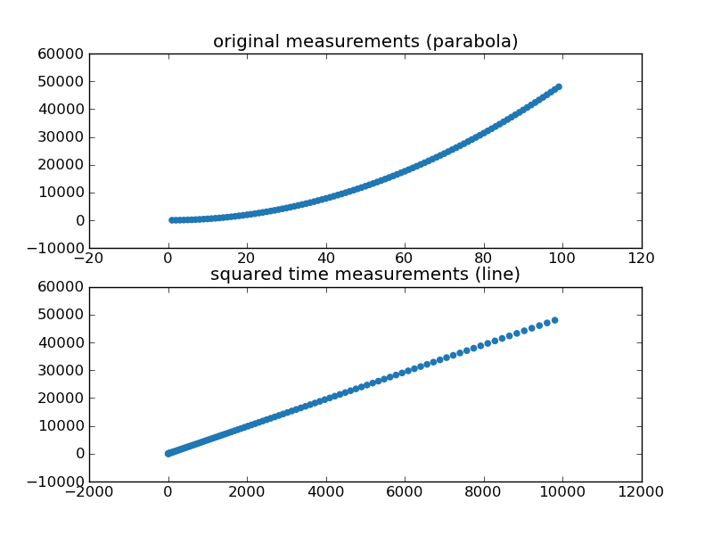

Here are scatterplots of the original and transformed datasets. You
can see that squaring the time values turned the plot into a more
linear one.

Exercise Perform a linear regression on the original and
transformed data. Are they all significant? What's the R-squared
value of each? Which model would you prefer? Does the coefficient
of the transformed value mean anything to you?
For those keeping score at home, we got R-squared of .939 and 1.00
for the unadjusted and adjusted timings, which means we were able to
perfectly match the data after transformation. Note that in the
case of the squared timings, the equation we end up with is
displacement = 4.9 * time^2 , which is the exact formula we had
for gravity. Awesome!
Exercise Can you improve the R-squared values by
transformation in the county health rankings? Try taking the log of
the population, a common technique for making data that is bunched
up spread out more. To understand what the log transform did, take
a look at a scatterplot.
Log-transforming population got us from R-squared = .026 to
R-squared = .097.
Linear regression, scatterplots, and variable transformation can get
you a long way. But sometimes, you just can't figure out the right
transformation to perform even though there's a visible relationship
in the data. In those cases, more complex technques like nonlinear
least
squares can
fit all sorts of nonlinear functions to the data.
Eliminate Free Lunches, Save the Planet
At some point in performing a regression and testing for a
correlation, you will be tempted to come up with solutions to
problems the regression has not identified. For example, we noticed
that the percentage of children eligible for free lunch is pretty
strongly correlated with the morbidity rate in a community. How can
we use this knowledge to lower the morbidity rate?
ALERT, ALERT, ALERT!!! The question at the end of the last
paragraph jumped from correlation to causation.
It would be far-fetched to think that increasing or decreasing the
number of children * eligible * for school lunches would increase or
decrease the morbidity rate in any significant way. What the
correlation likely means is that there is a third variable, such as
available healthcare, nutrition options, or overall prosperity of a
community that is correlated with both school lunch eligibility and
the morbidity rate. That's a variable policymakers might have
control over, and if we somehow improved outcomes on that third
variable, we'd see both school lunch eligibility and the morbidity
rate go down.
Remember: correlation means two variables move together, not that
one moves the other.
ANOVA, Logistic Regression, Machine Learning
Today you've swallowed quite a bit. You learned about significance
testing to support or reject high-likelihood meaningful hypotheses.
You learned about the T-Test to help you compare two communities on
whom you've measured data. You then learned about regression and
correlation, for identifying variables that change together. From
here, there are several directions to grow.
-
A more general form of the T-Test is an
ANOVA, where
you can identify differences among more than two groups, and control
for known differences between items in each dataset.
-
Logistic
regression, and
more generally
classification,
can take a bunch of independent variables and map them onto binary
values. For example, you could take all of the additional measures
for an individual and predict whether they will die before the age
of 75.
-
Machine
learning and data
mining are fields that
assume statistical significance (you collect boatloads of data) and
develop algorithms to classify, cluster, and otherwise find
patterns in the underlying datasets.
{kind=link}